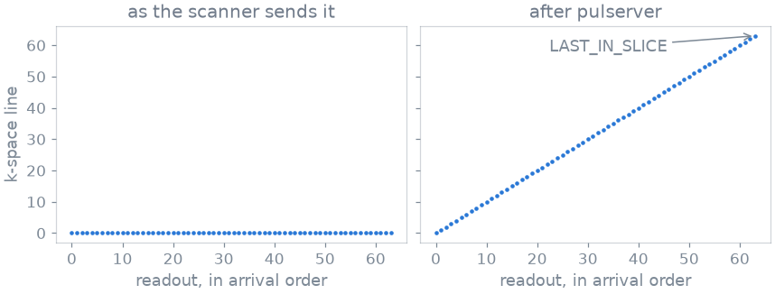
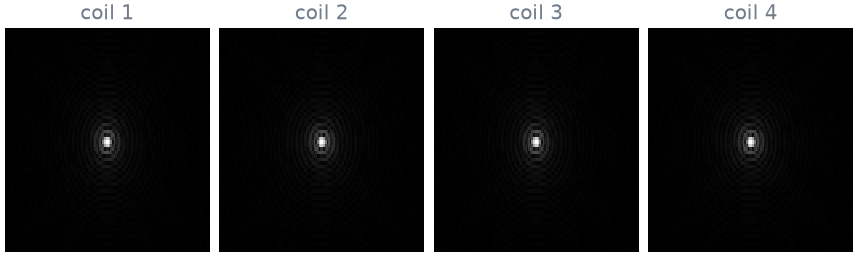

Note
Go to the end to download the full example code.
4. What your recon receives#
The scanner sends its raw data back the way Gadgetron expects it: as an ISMRMRD (MRD) stream, a header followed by one acquisition per readout. A scanner knows little about your sequence, so most of what a reconstruction needs is missing from that stream. pulserver fills it in from your sequence before your recon plugin sees a single readout.
In this lesson you look at the data at each stage, and you write a recon plugin that reconstructs nothing yet: it only shows what arrives. Lesson 5 turns it into a reconstruction.
Learning objectives
Read an MRD stream as the scanner sends it.
See what pulserver fills in from your sequence: the encoding in the header, and the counters and flags of every readout.
Write a plugin that runs a step on every readout and receives the sorted k-space when a slice is complete.
If you know Gadgetron, map each of its pieces to pulserver’s.
Previous: 3. What the scanner plays. Next: 5. Your recon plugin, where your plugin reconstructs the image.
A series from the virtual scanner#
The console generates gre2d at 64 by 64, as in
lesson 1. simulate() plays it on a phantom of two
ellipses seen by four coils, and record() writes
what the scanner would send: an MRD file whose header names the design, and
the samples of each readout.
import tempfile
from pathlib import Path
import ismrmrd
import numpy as np
from pulserver import virtual
from pulserver.protocol import UIParam, format_values, parse_listing
system = """[Limits]
B0: 3.0
max_grad: 40
grad_unit: mT/m
max_slew: 150
slew_unit: T/m/s
[Limits End]
"""
store = Path(tempfile.mkdtemp())
console = virtual.Console(plugins=[], limits=system, store=store)
listing = console.design("list", "gre2d")["reply"]
entries = parse_listing(listing[listing.index("[Protocol]") :])
values = {key: entry.value for key, entry in entries.items()}
values.update({UIParam.NX: 64, UIParam.NY: 64})
generated = console.design("generate", "gre2d", format_values(values, entries))
scan, design = generated["scan"], generated["design"]
sequence = store / scan / design / "sequence.seq"
phantom = virtual.Phantom(
[
virtual.Ellipse((0.0, 0.0, 0.0), (0.08, 0.06), t1=0.8, t2=0.08),
virtual.Ellipse(
(0.03, 0.01, 0.0), (0.015, 0.015), intensity=-0.5, t1=0.8, t2=0.08
),
],
coils=4,
)
series = store / "series.h5"
readouts = virtual.simulate(sequence, phantom.tissue(2e-3))
print(virtual.record(series, scan, design, readouts), "readouts")
64 readouts
As the scanner sends it#
Open the file with the ismrmrd package, as a Gadgetron gadget would see
the stream:
dataset = ismrmrd.Dataset(str(series), "dataset")
header = ismrmrd.xsd.CreateFromDocument(dataset.read_xml_header())
received = [
dataset.read_acquisition(i) for i in range(dataset.number_of_acquisitions())
]
dataset.close()
matrix = header.encoding[0].encodedSpace.matrixSize
print(f"header: encoded matrix {matrix.x} x {matrix.y}")
print("readout 1: ", describe(received[0]))
print("readout 64:", describe(received[-1]))
header: encoded matrix 1 x 1
readout 1: line 0, slice 0, echo sample 0, flags []
readout 64: line 0, slice 0, echo sample 0, flags ['LAST_IN_MEASUREMENT']
The header does not know the matrix, and every readout claims to be line 0 of slice 0, with no flags but the one that ends the measurement. Sorting these readouts into k-space is impossible: the scanner played your sequence without knowing what each readout encodes.
What pulserver fills in#
The sequence carries this information. Its labels, the pp.make_label events of
Pulseq (LIN, SLC, …), say which line and slice each readout
encodes, and its definitions give the matrix and the field of view.
pulserver’s reconstruction proxy finds the design the header names and
copies all of this into the stream. You do not call it yourself; here you
run the same functions to see the result:
from pulserver.proxy import SequenceTable, enrich_acquisition, enrich_header
table = SequenceTable.read(sequence)
enrich_header(header, table)
for row, acquisition in enumerate(received):
enrich_acquisition(acquisition, table, row)
matrix = header.encoding[0].encodedSpace.matrixSize
print(f"header: encoded matrix {matrix.x} x {matrix.y}")
print("readout 1: ", describe(received[0]))
print("readout 64:", describe(received[-1]))
header: encoded matrix 128 x 64
readout 1: line 0, slice 0, echo sample 64, flags ['FIRST_IN_ENCODE_STEP1', 'FIRST_IN_SEGMENT', 'FIRST_IN_SLICE', 'LAST_IN_ENCODE_STEP1']
readout 64: line 63, slice 0, echo sample 64, flags ['FIRST_IN_ENCODE_STEP1', 'LAST_IN_ENCODE_STEP1', 'LAST_IN_MEASUREMENT', 'LAST_IN_SEGMENT', 'LAST_IN_SLICE']
Now the header holds the matrix, 128 samples by 64 lines (the readout is oversampled twice), and every readout its line. The echo sample says where the echo is. The flags mark the first readout of the slice and the last, and the last one is what tells a reconstruction that the slice is complete.
Here is the order the lines arrive in, before and after:

gre2d acquires its lines in order, from the bottom of k-space to the
top. A sequence with another order, or with interleaved slices, is sorted
the same way: the counters say where each readout goes, whatever the order
it arrives in.
A plugin that reconstructs nothing#
A recon plugin works like a Gadgetron chain, in two stages.
Each readout, as it arrives, passes through the plugin’s gadgets: small per-readout steps such as noise prewhitening or removing the readout oversampling. A gadget returns the samples to keep, or
Noneto drop the readout.pulserver then places the readout in k-space by its counters. When the flag named in
triggersarrives, hereLAST_IN_SLICE, the k-space of that slice is complete, and pulserver calls the plugin’sreconwith it.
This plugin has one gadget, which collects the lines it has seen, and a recon
that prints what it receives and returns nothing. pulserver runs every
stream on a fresh copy of the plugin, so anything you want to keep after the
run goes somewhere outside it, here the list kept:
from pulserver import recon
from pulserver.mrd import AcquisitionFlag
kept = []
class CountLines(recon.Gadget):
def __init__(self):
self.lines = set()
def __call__(self, acquisition, data):
self.lines.add(acquisition.idx.kspace_encode_step_1)
return data # the samples, unchanged
class ShowWhatArrives(recon.ReconPlugin):
def __init__(self):
super().__init__(
gadgets=[CountLines()],
triggers={"imaging": AcquisitionFlag.LAST_IN_SLICE},
)
def recon(self, context, branch, data): # noqa: ARG002
buffer = data.data
print(f"branch {branch!r}: {len(self.gadgets[0].lines)} lines seen")
print(f"k-space: {buffer.kspace.shape}, axes {buffer.axes}")
print(f"image to return: {buffer.image_shape}")
kept.append(buffer.kspace)
return None
run() sends a recorded series through a
plugin in this process. Given the store of designs, it fills in the
stream from the design first, exactly as the proxy does on a scanner:
plugin = ShowWhatArrives()
outputs = plugin.run(str(series), store=str(store))
branch 'imaging': 64 lines seen
k-space: (4, 64, 128), axes ('coil', 'phase_encode', 'readout')
image to return: (64, 64)
recon was called once, when the 64th readout closed the slice. It
received the k-space of the slice with the coils first, then the lines, then
the readout samples; and the matrix of the image it should return, 64 by 64.
This is the k-space it received, one panel per coil:

If you know Gadgetron#
The pieces map one to one:
Gadgetron |
pulserver |
|---|---|
A Python gadget looping over |
A |
|
|
|
|
|
|
The XML chain |
The plugin’s constructor |
|
|
|
|
The difference is where the counters come from. In Gadgetron the scanner’s own sequence writes them; here pulserver writes them from your Pulseq labels, and the sorting needs no sequence-specific code in the reconstruction.
As a spec#
What this lesson did, stated the way you would ask an agent for it:
Record a 64 x 64 gre2d series on pulserver's virtual scanner with a
four-coil phantom. Print the MRD header's encoded matrix and the line,
slice, echo sample and flags of the first and last readout, before and
after enrichment from the design. Then write a pulserver ReconPlugin
triggered on LAST_IN_SLICE, with a gadget that collects the lines seen,
whose recon prints the k-space shape, axes and image shape it receives
and returns nothing; run it on the series with the design store.
Total running time of the script: (0 minutes 0.749 seconds)